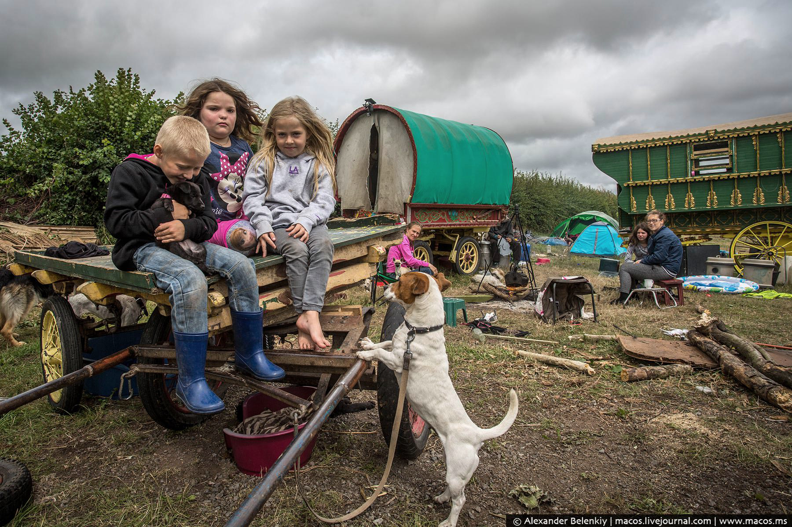
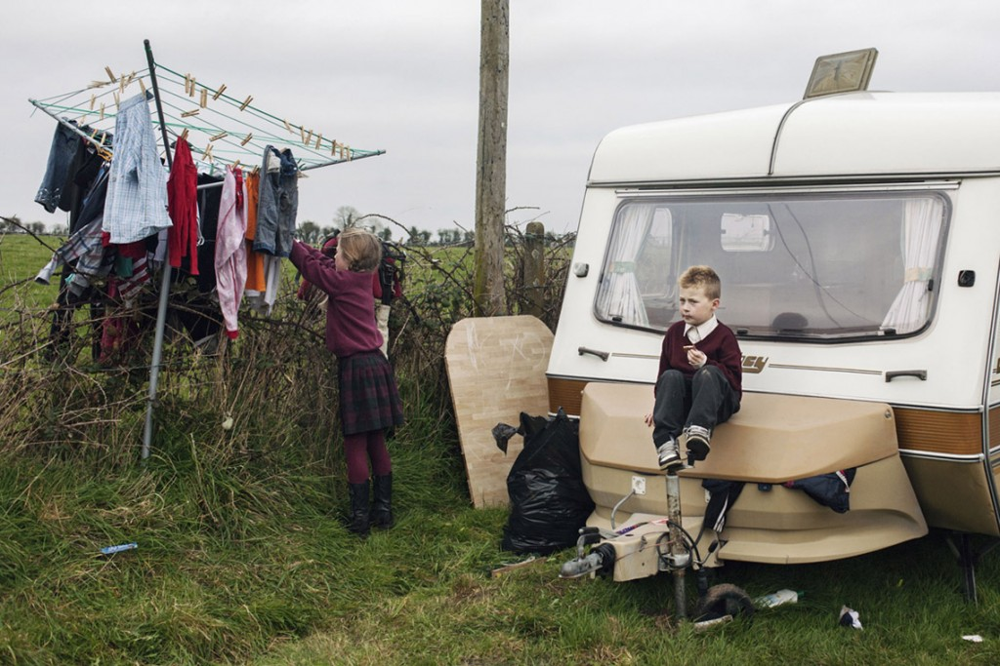

Ирландия удивительна многими неординарными фактами. Например, в Ирландии проживает максимальное количество рыжеволосых людей. Они считают себя «позолоченными» природой людьми. Еще одним удивительнейшим фактом является то, что число собак разных пород, живущих в Ирландии превышает людское население, численность которого на 2017 год составляет около 5 млн человек. Пожалуй, это единственная в мире страна, где собак больше, чем людей! Но давайте вернемся к людям. В среднем, женское население живет до 80, а мужское – до 74 лет.  Около 95% ирландцев христиане, остальные исповедуют иудаизм. Но существует среди Ирландского населения народ, не отличающийся благородными поступками. Это народ, похожий на цыган, о котором вы знаете хотя бы из фильма «Большой куш». Эти странноватые голодранцы явно связаны с криминалом и, кажется, не заинтересованы ни в чем, кроме пьянства и подпольных боев. Именно по поводу этих ребят Томми и говорит Турецкому свою знаменитую фразу о том, как он ненавидит цыган, чем выражает мнение значительной части британцев. Вот только это никакие не цыгане, а вполне себе европейские по происхождению кочевники — пави, они же «ирландские путешественники». У них есть своя культура, необычные для этих мест нравы и собственный отдельный язык, в основе которого лежит причудливая смесь ирландского, шотландского и английского. Раньше бытовало мнение, что пави — это действительно цыгане, которые долгое время жили в Ирландии, но так сильно перемешались с местными, что стали неотличимы от них. Была даже версия, что они — потомки викингов, которые так сильно полюбили скитаться по миру, что не смогли остановиться даже на суше. Генетический анализ показывает, что ирландские путешественники все же в большей мере кельты, то есть происходят из этих мест. Что заставило их внезапно сорваться с места и начать кочевую жизнь — неизвестно.  По образу жизни и занятиям странники похожи на цыган: кочуют по стране на телегах и в фургонах, живут в шатрах, а в наше время — и в автофургонах-кемперах. Они промышляют мелкой перепродажей промтоваров (купили где-то подешевле, продали в другом месте подороже), лужением и пайкой медной посуды, починкой обуви, чисткой дымоходов, ремонтом крыш, сезонными сельхозработами, торговлей лошадьми… Среди них, как и среди цыган, есть талантливые певцы, танцоры, музыканты. Каждый день возвращаясь со школы Эндрю Хозиер-Бирн видел колорит пави. Возможно именно это заставило его работать усерднее, заниматься и в конце концов записать несколько хитов, в числе которых Take me to Church. Вам же, для того, чтобы попасть в Дублин и самим увидеть жизнь ирландских пави нужно всего лишь записать кавер на песню любой ирландской группы или исполнителя, снять это на видео, опубликовать это видео в ютьюб, вставить ссылку на сайт irishtrue.vgorode.ua. Как знать, может на твой сольный концерт придут некоторые из них.
конкурс